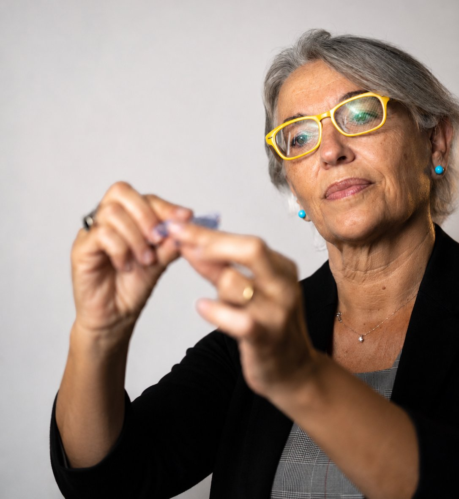
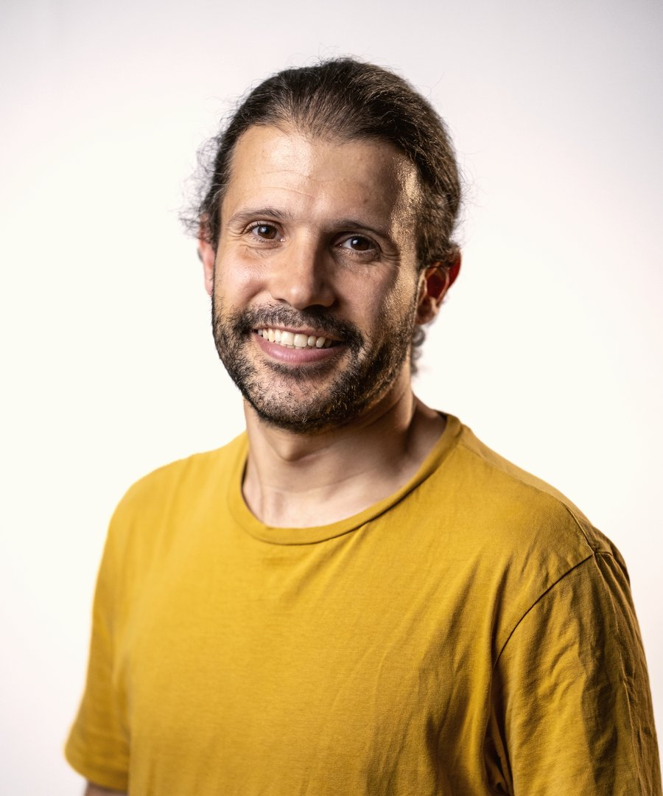
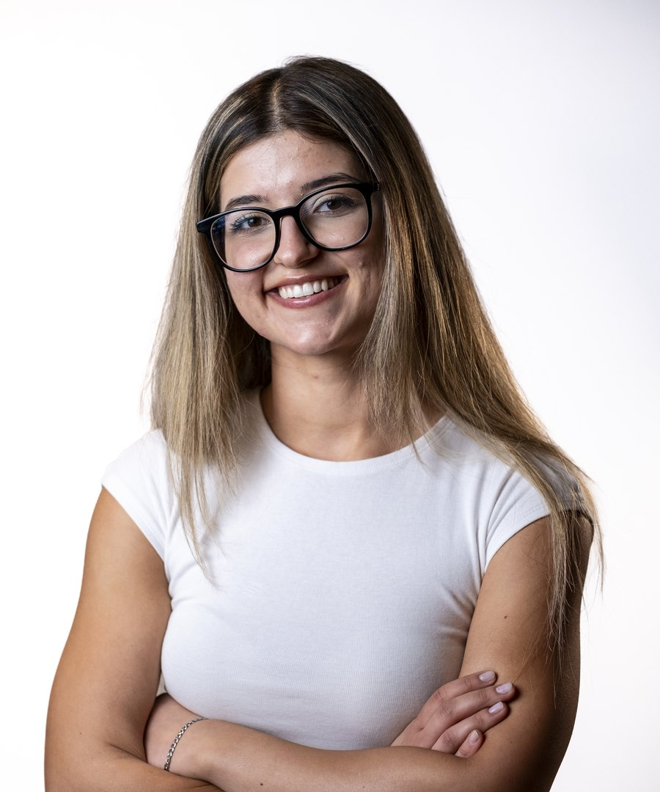
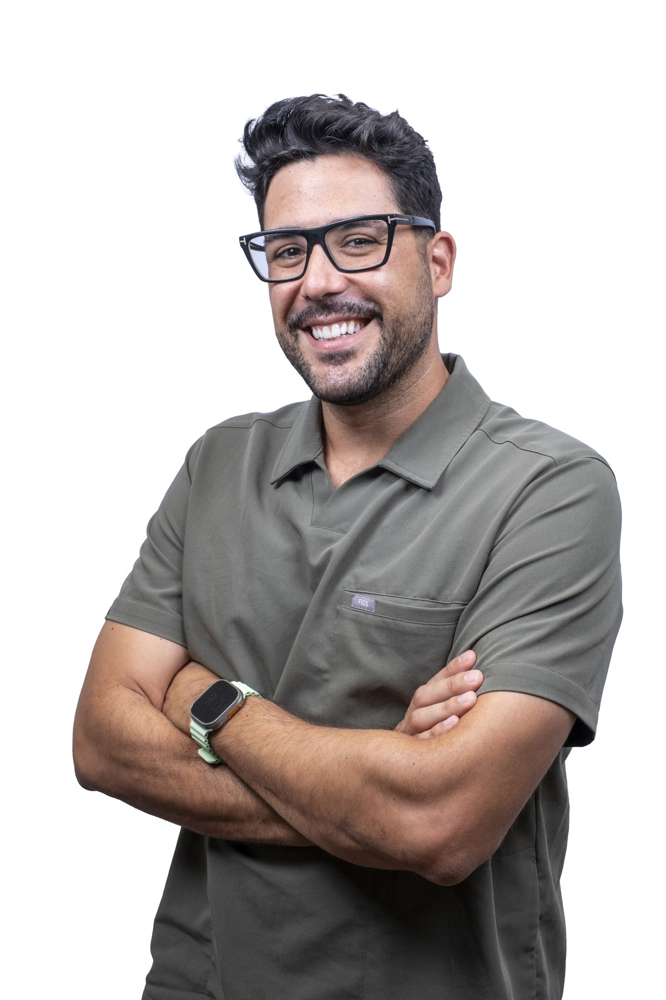
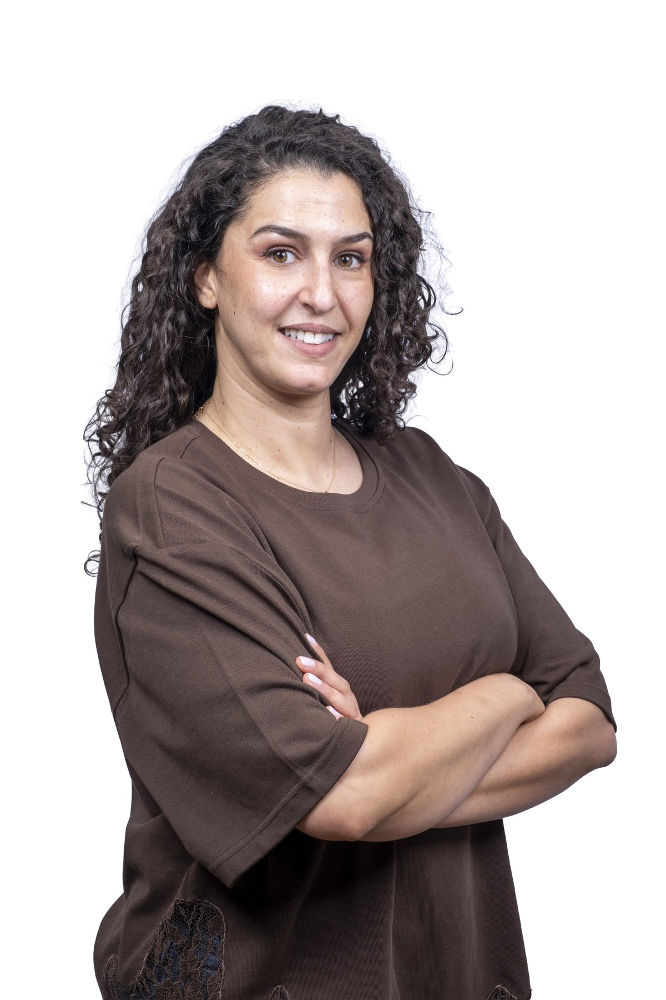
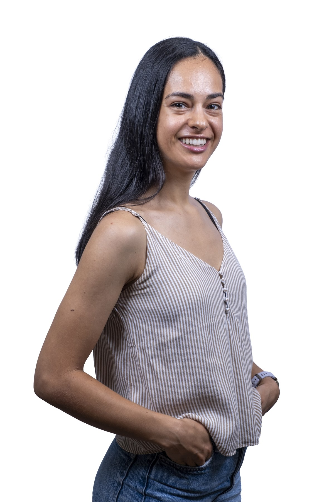
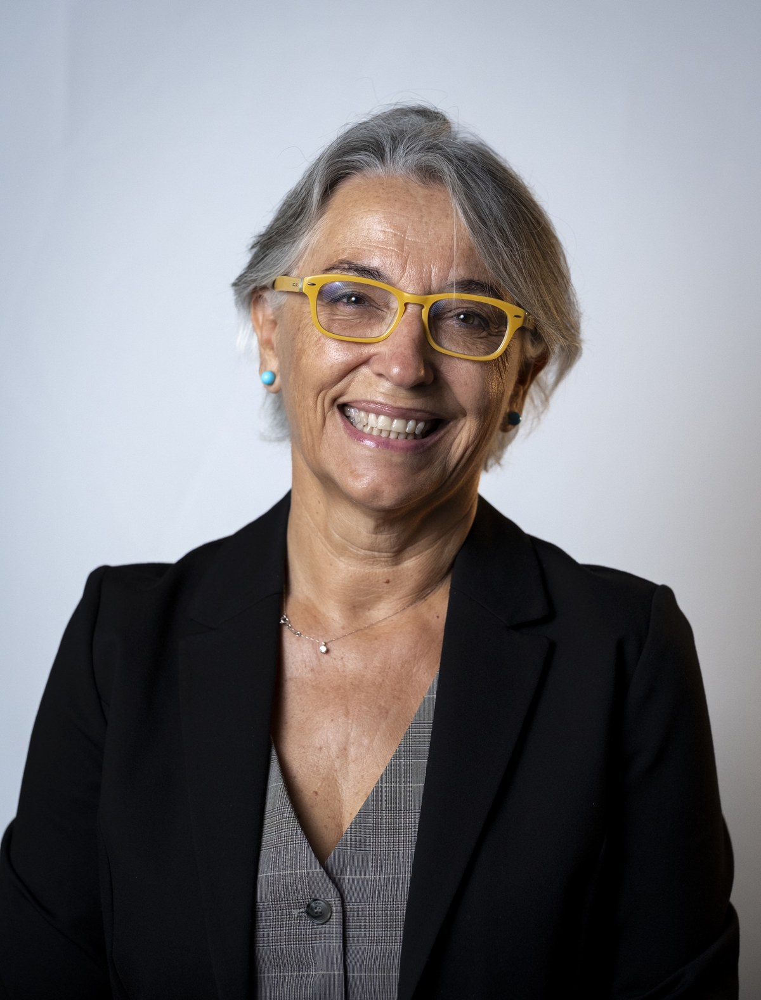
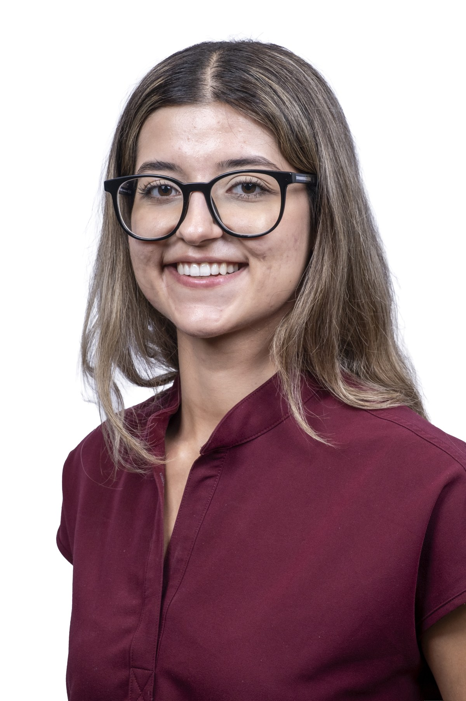
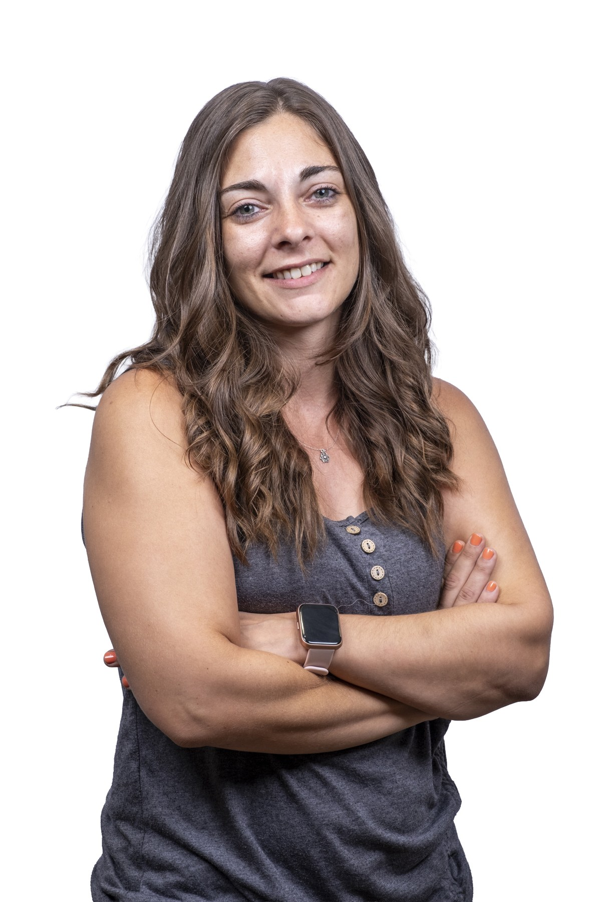
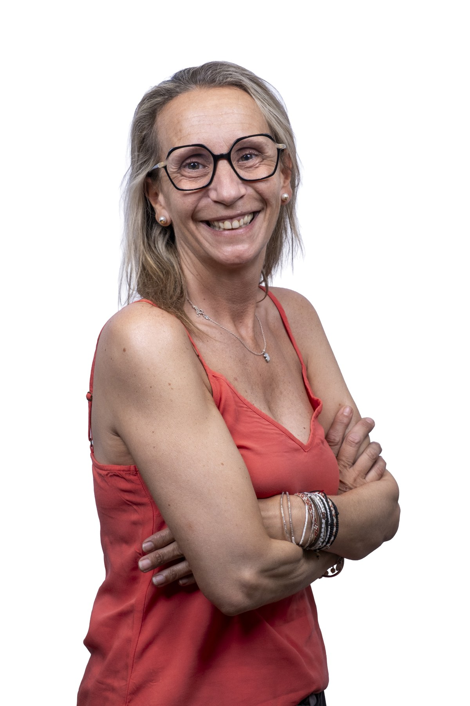

Dr. Joan Carrera Guiu
Odontólogo · FundadorFundador
Fundador de la clínica. Presidente del Colegio de Dentistas de Lleida y vicesecretario del Consejo General de Dentistas.
Conoce a los profesionales que te atenderán en Lleida y Tremp, su formación y las áreas en las que trabajan.
Antes de proponer un tratamiento, escuchamos qué te preocupa. Te explicamos qué hemos observado. Las decisiones se toman contigo, con tiempo para resolver tus dudas.
El equipo participa en cursos, congresos y actualizaciones científicas para revisar sus conocimientos y aplicarlos en la consulta.
Escuchamos tus preocupaciones para tenerlas en cuenta al valorar las opciones de tratamiento.
El equipo mantiene su formación mediante cursos y encuentros profesionales.
Te explicamos siempre el diagnóstico, las opciones y los costes con claridad y sin letra pequeña.
Fundador de la clínica. Presidente del Colegio de Dentistas de Lleida y vicesecretario del Consejo General de Dentistas.

Es director médico de Estudi Dental Carrera. Se dedica a la implantología, la cirugía oral y la periodoncia.
Máster en Implantología Oral y Prótesis, Universidad Alfonso X el Sabio.
Másteres en Cirugía Oral y en Periodoncia, Universitat de Lleida. Ponente en los congresos EAO, SEPES y SEPA.

Conservar la pieza propia siempre que sea posible. Sustituirla, solo cuando es estrictamente necesario. Dra. Carme Roure · Sobre el enfoque conservador de la clínica
Se dedica a la ortodoncia, la disfunción craneomandibular y el bruxismo. También trabaja en medicina dental del sueño y armonización orofacial.
Licenciatura en Medicina y Cirugía, Universitat Autònoma de Barcelona (1990). Licenciatura en Odontología, Universitat Internacional de Catalunya (2000).
Posgrado en Ortodoncia y Ortopedia Dental, Universidad de Padua.
Másteres en Ortodoncia, Medicina Estética y Armonización Orofacial. Es miembro de la SEDO.

Se dedica a la endodoncia, las prótesis y la rehabilitación oral mínimamente invasiva.
Formación de posgrado en estética dental y ácido hialurónico.
Máster en Ortodoncia, Athenea Dental Institute. Certificaciones en Invisalign®, SureSmile y Spark.

Se dedica a la periodoncia y la rehabilitación oral. Valora la salud de las encías. Explica el diagnóstico antes de proponer un tratamiento.

Se encarga de la higiene y la prevención bucodental. Acompaña a los pacientes durante las visitas.

Dedicada a la salud periodontal y la educación en higiene oral. Ayuda a los pacientes a establecer hábitos de cuidado bucodental.

Atiende en los centros de Lleida y Tremp. Acompaña a los pacientes en la higiene y la prevención. Resuelve dudas sobre el cuidado diario de los dientes.

Atiende a los pacientes. Coordina las citas y la documentación para preparar cada visita.

Es director médico de Estudi Dental Carrera. Se dedica a la implantología, la cirugía oral y la periodoncia.
Máster en Implantología Oral y Prótesis, Universidad Alfonso X el Sabio.
Másteres en Cirugía Oral y en Periodoncia, Universitat de Lleida. Ponente en los congresos EAO, SEPES y SEPA.

Todo lo que se explica antes es una explicación; si se explica después, es una excusa. Dra. Yasmin · Sobre la predictibilidad como principio
Es responsable clínica de Tremp. Se dedica a la odontología restauradora, la endodoncia y las prótesis implantosoportadas.
Licenciatura, Universitat de València. Máster en Odontología Restauradora y Endodoncia, Universitat de València.
Posgrado en Estética Dental Avanzada, Societat Catalana d’Odontologia.

Practica la endodoncia para conservar los dientes naturales. Explica las opciones de tratamiento con claridad.

Médica odontóloga. Tiene másteres en Ortodoncia, Medicina Estética y Armonización Orofacial. Posgrado de ortodoncia en Padua.
Se dedica a la endodoncia, la estética dental y la rehabilitación oral. Máster en Ortodoncia por Athenea Dental Institute.

Acompaña a los pacientes de Lleida y Tremp en la higiene oral, la prevención y el cuidado diario de los dientes.

Acompaña a los pacientes de Tremp en la higiene oral y les ayuda a mantener buenos hábitos de prevención.

Atiende a los pacientes de Tremp. Coordina las citas y la documentación para preparar cada visita.
La formación y los medios de la clínica apoyan el diagnóstico y la planificación de los tratamientos.
Participación anual en los principales congresos: SEPA, SEOQ, SEPES y EAO Europa.
Todo el equipo clínico dispone de formación de postgrado o máster en su especialidad.
Escáner 3D, radiología digital, microscopio endodóncico, escáner intraoral y CAD/CAM.
Aplicamos protocolos de esterilización e higiene en el instrumental y los espacios de trabajo.
La primera visita es una exploración y una conversación. Te explicamos qué pasa y qué tratamiento podría ser necesario, con presupuesto claro, antes de iniciar un tratamiento.